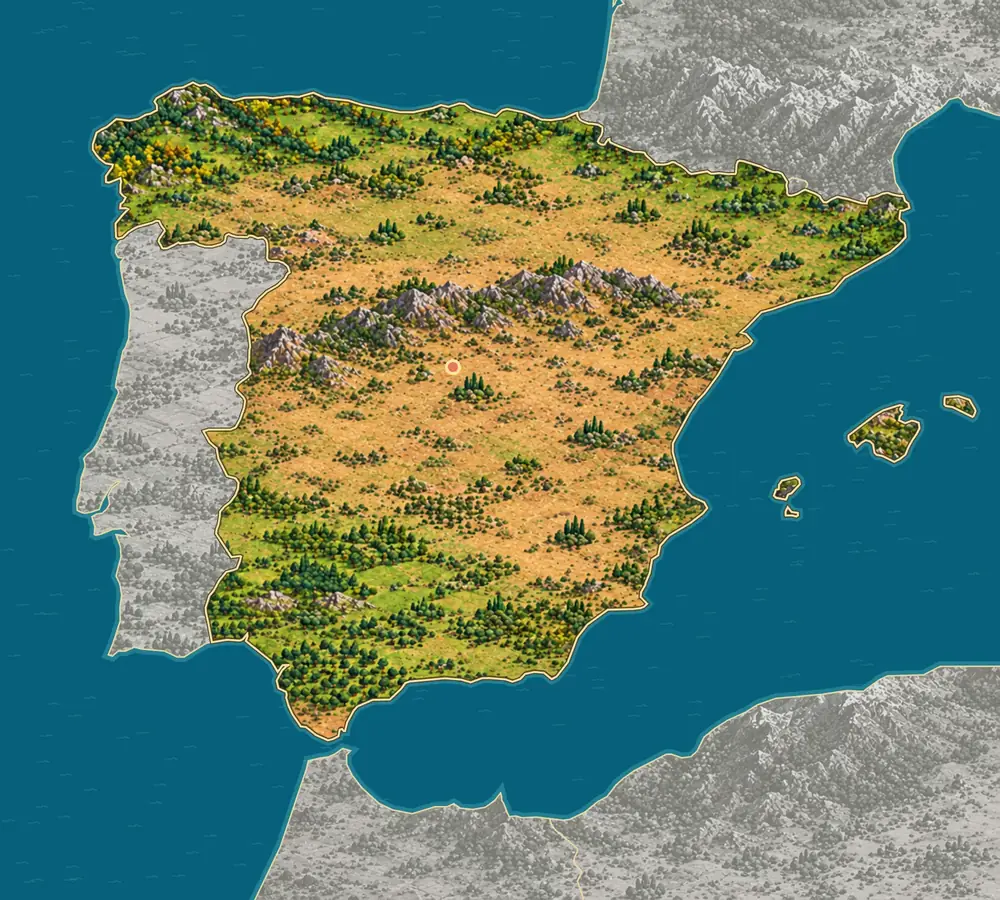
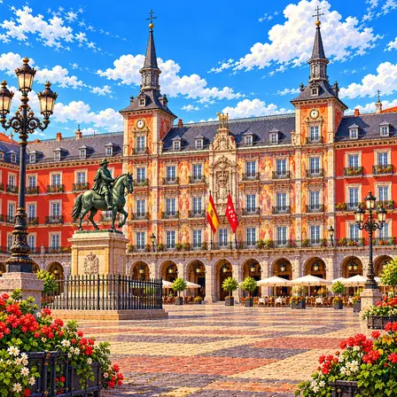
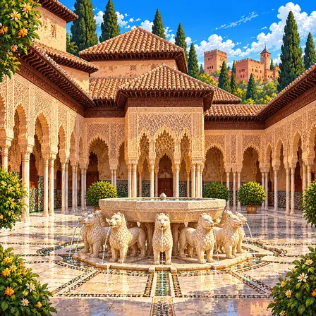
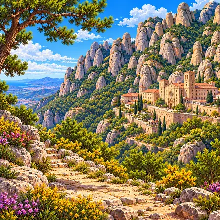
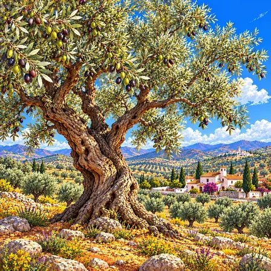
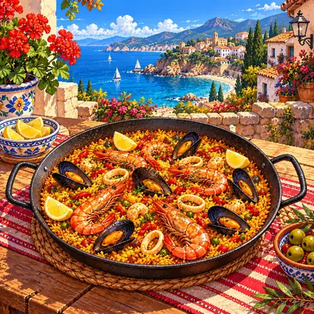
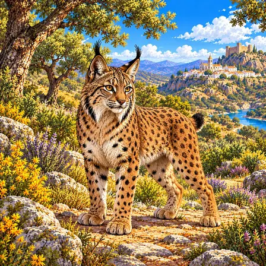
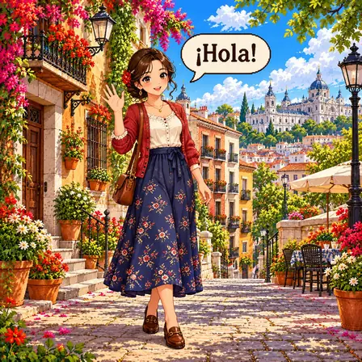

높고 평평한 메세타
스페인 가운데는 메세타라는 넓은 고원(높고 평평한 땅)이에요. 이 고원 때문에 스페인은 평균 높이가 600m가 넘어, 유럽에서 땅이 높은 나라에 속해요.

스페인은 나라 가운데에 높고 평평한 땅이 넓게 펼쳐져 있어요. 북쪽 바닷가는 비가 많아 푸르고, 가운데와 남쪽은 여름에 메말라요. 바다 멀리 화산섬 카나리아 제도도 스페인 땅이에요.
스페인 본토는 가운데의 메세타 고원과 그 둘레의 산맥, 에브로강과 과달키비르강의 낮은 땅으로 이루어져 있어요. 지중해의 발레아레스 제도와 대서양의 카나리아 제도가 있어요.
스페인 가운데는 메세타라는 넓은 고원(높고 평평한 땅)이에요. 이 고원 때문에 스페인은 평균 높이가 600m가 넘어, 유럽에서 땅이 높은 나라에 속해요.
메세타 한가운데를 중앙 산계라는 산줄기가 가로질러 고원을 북쪽과 남쪽 둘로 나눠요. 북동쪽에는 에브로강, 남쪽에는 과달키비르강이 흐르는 낮은 땅이 고원과 바깥 산맥 사이에 있어요.
스페인의 해안선은 5,755km나 돼요. 비가 많아 푸른 북쪽과 서쪽은 대서양, 여름에 메마른 동쪽과 남쪽은 지중해에 닿아 있고, 지중해에는 마요르카섬이 있는 발레아레스 제도가 있어요.
과달키비르강이 대서양으로 들어가는 곳에는 도냐나라는 넓은 습지가 있어요. 강과 바람이 실어 온 모래와 흙이 쌓여 늪과 호수, 모래 언덕이 생겼고, 해마다 물새 50만 마리가 넘게 겨울을 나요.
아프리카 서쪽 대서양의 카나리아 제도는 화산이 만든 섬들이에요. 테네리페섬의 테이데산은 높이 3,718m로 스페인에서 가장 높고, 바다 밑바닥부터 재면 약 7,500m나 돼요.
프랑스와 맞닿은 북쪽 피레네산맥의 몽페르뒤 일대는 석회암으로 된 산이에요. 정상(3,352m)은 스페인 쪽에 있고, 빙하와 물이 바위를 깎아 깊은 협곡을 만들었어요.
스페인에서 잘 알려진 도시, 역사유산, 자연, 식물, 문화, 음식, 동물, 인사말, 국기를 한 장씩 그렸어요.

마드리드는 스페인의 수도예요. 유럽의 수도 가운데 가장 높은 곳에 자리해요. 유명한 그림이 가득한 큰 미술관이 있어요.
마드리드는 스페인의 수도로 인구 약 340만 명이 살아요. 9세기 무어인이 세운 작은 요새에서 시작해 1561년 펠리페 2세가 수도로 지정했어요. 해발 약 650m로 유럽연합 나라들의 수도 가운데 가장 높아요. 세계적으로 손꼽히는 프라도 미술관과 왕궁이 있으며, 17~18세기 바로크식 도시 계획이 이루어졌어요.

알함브라 궁전은 700년쯤 전에 지은 이슬람 궁전이에요. 벽과 천장이 섬세한 무늬와 타일로 가득해요. 펌프 없이도 궁전 곳곳에 물이 흐르게 만들었어요.
알함브라 궁전은 스페인 그라나다에 있는 나스르 왕조(13~15세기) 이슬람 궁전이에요. 1492년 가톨릭 왕들에게 함락될 때까지 이베리아반도 마지막 이슬람 왕국의 중심지였어요. 아라베스크 무늬·기하학 타일·무카르나스 천장은 수학적 정밀도와 예술성의 결합이에요. 사자의 정원 수로 체계는 중력만으로 궁궐 전체에 물을 공급하는 정교한 수리 공학이에요.

몬세라트는 톱날처럼 울퉁불퉁한 바위산이에요. 오랜 세월 비와 바람이 바위를 깎아 이런 모양이 되었어요. 산 중턱에는 오래된 수도원이 있어요.
몬세라트는 바르셀로나 근교의 기암절벽 산이에요. 약 4,000만 년 전 강이 실어 온 자갈이 쌓여 굳은 역암 지층이 들려 올라간 뒤, 빗물과 바람이 단단한 역암과 무른 바위를 서로 다르게 깎아 톱날 모양 암봉이 생겼어요. 산 중턱 베네딕트 수도원은 9세기부터 카탈루냐의 성지로 여겨지며, 흑색 마리아상이 보존되어 있어요.

올리브나무는 은빛 잎과 작은 열매를 가진 나무예요. 스페인은 올리브오일을 세계에서 가장 많이 만드는 나라예요. 수백 년 된 나무도 지금까지 열매를 맺어요.
올리브나무는 스페인 남부 안달루시아와 지중해 지역을 대표하는 나무예요. 은빛 잎과 작고 단단한 열매가 특징으로, 스페인은 세계 최대 올리브오일 생산국이에요. 수백 년 된 올리브나무들이 지금도 열매를 맺어요. 고대부터 평화·지혜·번영의 상징이었으며, 스페인 음식 문화의 핵심 재료예요.
플라멩코 드레스는 플라멩코 춤을 출 때 입는 옷이에요. 치마 끝의 물결 같은 주름이 춤출 때 활짝 펼쳐져요. 춤추는 사람은 부채와 머리꽃으로 멋을 내요.
플라멩코 드레스는 스페인 남부 안달루시아에서 탄생한 플라멩코 춤의 의상이에요. 몸에 붙다가 무릎 아래로 물결치는 프릴 치맛자락이 춤 동작을 따라 화려하게 펼쳐져요. 플라멩코는 노래, 기타 연주, 춤, 손뼉 장단이 어우러진 예술로 2010년 유네스코 인류무형문화유산에 등재됐어요. 춤추는 사람은 부채와 머리에 꽂은 꽃으로 멋을 더해요. 4월 세비야 봄 축제에서는 거리 가득 플라멩코 드레스를 입은 사람들을 만날 수 있어요.

파에야는 넓은 팬에 쌀과 해산물을 넣어 끓인 요리예요. 사프란이라는 향신료가 밥을 노랗게 물들여요. 팬 바닥의 바삭한 누룽지가 가장 맛있대요.
파에야는 넓고 얕은 팬에 쌀과 해산물, 채소를 넣고 끓여 만드는 스페인 발렌시아 지방의 쌀 요리예요. 이름은 요리에 쓰는 팬의 이름에서 왔어요. 사프란이라는 향신료가 쌀을 노랗게 물들이고 특유의 향을 더해요. 새우와 홍합을 올린 해산물 파에야가 유명하지만, 원조 발렌시아식은 닭고기와 토끼고기를 넣어요. 팬 바닥에 눌어붙은 누룽지 소카라트를 가장 맛있는 부분으로 쳐요.

이베리아 스라소니는 귀 끝에 검은 털이 붓처럼 달린 고양이과 동물이에요. 한때 100마리도 안 남았지만, 사람들의 보호로 2,000마리가 넘게 늘었어요. 토끼를 가장 많이 잡아먹어요.
이베리아 스라소니는 귀 끝에 검은 털 붓이 달리고 뺨에 수염 같은 갈기가 난 고양이과 동물이에요. 스페인과 포르투갈의 이베리아반도 덤불숲에서만 살아요. 먹이의 대부분이 토끼라서, 토끼가 줄면 함께 위험해지는 까다로운 사냥꾼이에요. 2002년에 100마리도 안 남아 세계에서 가장 위험한 고양이과 동물이었지만, 토끼 늘리기와 야생 복원 노력으로 2,000마리 이상으로 회복됐어요. 멸종 위기 동물 보호의 대표 성공 사례로 꼽혀요.

올라(¡Hola!)는 스페인어로 '안녕'이에요. H는 소리를 내지 않아서 '홀라'가 아니라 '올라'예요. 스페인어는 문장 앞에 거꾸로 된 느낌표를 붙여요.
¡Hola!는 '올라'라고 읽는 스페인어 인사말이에요. H는 소리 내지 않는 묵음이라 '홀라'가 아니라 '올라'예요. 스페인어는 라틴어에서 발전한 로망스어로, 모국어로 쓰는 사람이 5억 명에 달해 세계에서 두 번째로 많아요. 스페인과 중남미 등 20개 나라 안팎의 공용어예요. 문장 앞에 거꾸로 된 느낌표(¡)를 미리 붙이는 세계에서 보기 드문 표기법을 써요.

스페인 국기는 빨강, 노랑, 빨강 세 줄로 되어 있어요. 가운데 노란 줄이 두 배로 넓어요. 노란 줄 왼쪽에는 나라를 나타내는 문장이 그려져 있어요.
스페인 국기는 위아래의 빨간 줄 사이에 두 배 넓이의 노란 줄이 있는 디자인이에요. 노란 줄 왼쪽에는 옛 왕국들의 문장을 모은 국장이 그려져 있어요. 빨강과 노랑은 1785년 카를로스 3세 임금이 바다에서 멀리서도 잘 보이는 색으로 고른 것에서 시작됐어요. 국장 속 두 기둥은 지브롤터 해협의 전설 속 '헤라클레스의 기둥'이에요. 노란색이 넓어 '붉은 금빛 깃발(로히괄다)'이라는 애칭으로 불려요.